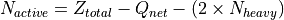

Advanced Usage
This page collects the controls most users need after the first successful run: levels of theory, job selection, ESS routing, resource control, rotor scans, transition-state adapters, restarts, and troubleshooting.
Flexible Coordinate Input
The xyz field of an ARCSpecies can be:
a multiline XYZ string;
a list of XYZ strings;
a path to an XYZ file;
a path to a supported ESS input or output file;
a path to ARC conformer files generated before or after optimization.
Example:
species:
- label: TS1
is_ts: true
xyz:
- guesses/ts1_guess_1.gjf
- guesses/ts1_guess_2.out
- |
C 0.000000 0.000000 0.000000
H 0.000000 0.000000 1.089000
Job Types
ARC recognizes these current job type keys:
conf_opt- conformer optimization;conf_sp- conformer single-point jobs;opt- geometry optimization;fine- fine-grid optimization;freq- frequency calculation;sp- single-point energy;rotors- rotor scans;irc- intrinsic reaction coordinate;orbitals- molecular orbitals;stability- wavefunction stability analysis (Gaussian and ORCA, off by default). It runs for a TS and for any other species whose optimization ran with a restricted reference, which is the only reference it can inform: a restricted solution gives the same energy as an unrestricted one if and only if it is stable.IT RUNS FROM THE OPTIMIZATION, before the frequency job, the single point, the IRC and the rotor scans of that species, all of which inherit the SCF reference and the geometry the optimization converged to. Those jobs are held until the verdict is in, and it is a single point, so the wait is one job. For a TS an external instability of a restricted reference re-optimizes the species unrestricted, starting from the geometry the first optimization reached, and every later job at a level the verdict decides then runs on that one reference and that one geometry - unless
number_of_radicalswas declared for it, which always wins. Re-optimizing is what makes the change correct: the restricted geometry is a stationary point of the restricted surface only, and a Hessian computed there on the broken-symmetry reference can report imaginary modes belonging to the mismatch rather than to the molecule. At most one re-optimization is run per species, and ARC records it in the restart file so a resumed run does not spawn another. For any other species the verdict is reported in the log and inoutput.ymland nothing acts on it; declarenumber_of_radicals = 2to run such a species unrestricted throughout, since ARC reads a declaration as open-shell character only above one.WHICH LEVELS THE VERDICT DECIDES: density functional theory and Hartree-Fock, and no other. The energy of those levels IS the energy of their SCF determinant, so relaxing its spin symmetry onto the lower solution lowers the number the level reports, which is what the analysis measured. A correlated wavefunction level -
CCSD(T),DLPNO-CCSD(T),CCSD(T)-F12,MP2- keeps its restricted reference, because its energy is a correlation expansion built about a spin-adapted reference rather than the energy of that reference. Relaxing the spin symmetry of that reference absorbs into the orbitals the static correlation the expansion is there to recover, and it suppresses theT1diagnostic ARC reads off a coupled cluster single point, whose purpose is to report a reference the expansion is a poor description about. Measured in Molpro 2026 atcc-pVDZon a C5H10 singlet TS,T1falls from 0.0410 on the RHF reference to 0.0118 on the ROHF triplet one, below the 0.015 at which ARC reports multireference character, while the twoCCSD(T)-F12total energies differ by under 7 kcal/mol: the diagnostic moves without the energy moving, so the character the analysis measured would be left both uncorrected and unreported. No corresponding energy is quoted for a broken-symmetry UHF reference, because there is none to quote: Molpro’sccsd(t)-f12is its closed-shell program anduccsd(t)-f12its open-shell one over ROHF orbitals, and neither takes a spin-broken UHF determinant as its reference, so no coupled cluster energy OF that determinant exists to compare.A DOUBLE HYBRID DOES NOT DECIDE A REFERENCE EITHER, although ARC types it as density functional theory.
B2PLYP,DSD-PBEP86,PBE0-DH,wB97X-2and the rest add a perturbative second-order correlation term to their Kohn-Sham determinant, so what they report is not that determinant’s energy but an expansion built about it, which is the construction the correlated wavefunction levels are excluded for.DOUBLE_HYBRID_METHODSinarc/job/adapters/common.pynames them and is read before the method type; it is a deny-list rather than a classification of every functional, so a double hybrid it does not name is treated as ordinary density functional theory.HF-3cgoes the other way and does decide a reference: its counterpoise, dispersion and short-range basis corrections are functions of the nuclear coordinates rather than of the wavefunction, so its energy is still its determinant’s energy plus a number the reference does not enter.THE GEOMETRY AND THE ZPE OF AN ADOPTED SPECIES THEN COME FROM ONE REFERENCE AND ITS ELECTRONIC ENERGY FROM ANOTHER wherever the single point runs at a correlated level. E0 sums the two, so it is not a point on either surface, and ARC reports that in the log, in the species’
output.ymlwarnings and in the run summary rather than re-running the species. Running the single point at the optimization level, or declaringnumber_of_radicals = 2, is what puts every term of that E0 on one reference.ONE ANALYSIS PER WAVEFUNCTION. A TS whose guess is abandoned carries an adopted external instability over to the next guess, which then runs unrestricted from its first job and is not analysed again: its reference is already decided. Every other verdict is dropped along with the geometry it was measured on, and the next guess is analysed in its turn, so
output.ymlnever reports a guess that was never measured as one measured stable.THE ORBITALS THE RE-OPTIMIZATION STARTS FROM are the analysis’ own where the ESS relaxed into the lower solution, and none otherwise. ORCA follows an instability it finds and writes the relaxed orbitals to the analysis job’s
input.gbw, which is the broken-symmetry solution the re-optimization is meant to sit on. Gaussian’sstable=(rext,noopt)reports an instability without following it, so its checkfile still holds the restricted orbitals; handing those to an unrestricted SCF returns it to the very solution the analysis rejected, since a restricted solution is a stationary point of the unrestricted equations too. ARC therefore drops the checkfile in that case and the job runsguess=mix, whose deliberately symmetry-broken guess is what finds the lower solution.On a species that is not a TS the analysis is expected to report
stablenearly every time: well under a few per cent of closed-shell equilibrium geometries are RHF -> UHF unstable. That is the point of running it. A well verified stable has identical restricted and unrestricted energies, so a barrier taken between it and a TS that ARC has made unrestricted is a difference on one surface rather than across two, which cannot otherwise be asserted; and an undeclared singlet biradical, whose restricted energy is simply wrong, is caught by nothing else in ARC.Where the electronic energy is one the verdict decides, adopting a verdict for a TS changes which biased number is used, not which correct one. The broken-symmetry solution ARC moves to is not a spin eigenfunction; it mixes in the higher multiplicity, so its energy lies ABOVE the spin-pure low-spin energy, and the restricted energy it replaces lies above the broken-symmetry one in turn:
E_projected < E_BS < E_restricted. Adoption is therefore a step toward the spin-pure energy that stops short of it. ARC does not project the contamination out.arc/checks/spin.pyholds the Yamaguchi approximate spin-projection arithmetic that estimatesE_projectedfrom the broken-symmetry and high-spin energies and theirS**2values; the residual error after an adoption is the contamination itself, in the direction it already had.THE ERROR IS ONE-SIDED, and this is the practical consequence. Adoption acts for a TS only, so a TS whose restricted reference was unstable runs unrestricted, at the levels the verdict decides, while the reactants and products it is compared against stay restricted. The adopted TS energy still sits above the spin-pure one while the wells, whose restricted references are stable, carry no such contamination, so the barrier the run reports is systematically OVERestimated by roughly the residual contamination of the TS – less so than the all-restricted barrier it replaces, which sat higher still. A species whose
<S**2>deviates from its spin-pureS(S+1)by more than 0.1 is warned about where its electronic energy is read, so the size of that residual is reported rather than left to be inferred. Declaringnumber_of_radicalsfor the wells too, where their character warrants it, is what puts both ends on the same footing;IN ORCA the analysis is requested with
STABPerform, and ARC always pairs it withSTABRestartUHFifUnstable true. With the key set tofalseORCA 6.0.0 prints the verdict and the stability-matrix roots and then aborts in LEANSCF with a BLAS incompatible-matrices error, measured at one and at eight processes and at three and at six roots, so ORCA has no equivalent of Gaussian’snoopt, which reports an instability without following it. With the keytruethe job terminates normally: ORCA rotates the orbitals of an unstable wavefunction, re-converges the SCF and analyses the result again, so the log holds two analyses with opposite verdicts. ARC reads the verdict of the FIRST one, which is the wavefunction under test; whether the second reached a stable solution is reported separately asfollowed_to_stable, and the spin expectation value of that relaxed solution ass_squared_after_follow. Only the verdict, the roots and the reference describe the tested wavefunction; every energy and spin value in that log describes the followed one. The ORCA analysis is an SCF post-step rather than a re-read of a converged wavefunction, so ARC hands it the orbitals of the job under test: ORCA names its own orbitals after the input file (input.gbw) and cannot read and write one file the way Gaussian reuses a single checkfile, so the previous orbitals are uploaded asguess.gbwand read with!MOReadand%moinp, while the job’s owninput.gbwis what is downloaded and becomes the next job’s guess. The ORCA submit templates copyguess.gbwinto the scratch directory andinput.gbwback out; a site running its own~/.arc/submit.pymust do the same or any ORCA job reading a guess will abort on a missing guess file.THE TWO CODES TEST THE SAME SPACE. ORCA analyses an RHF/RKS reference in UHF/UKS space and a UHF/UKS reference in UHF/UKS space, both Ms-conserving, and Gaussian’s
stable=(rext,noopt)uses the same Ms-conserving<AA,BB:AA,BB>singles matrix for both references. Neither code reaches the spin-flip (GHF) sector, so neither verdict is the weaker one. Measured on four systems the two agreed on every verdict, and at matched functional - ORCA’sB3LYP/Gis Gaussian’s VWN3 parameterisation, while plain ORCAB3LYPuses VWN-5 - their lowest roots agreed to under 0.4% on the three systems where both converged to the same SCF solution. On the fourth, a near-dissociated O(3P)…CH3 pair, the two codes converged to DIFFERENT UHF solutions (total energies 0.025 Hartree apart,<S**2>1.7488 against 1.700055), so its roots compare two wavefunctions rather than two codes and support no cross-code conclusion. Because neither code computes a spin-flip root for an unrestricted reference, both readers report the external sector as undetermined there rather than as clean: astableverdict on an unrestricted reference covers the spin-conserving sector alone, which is the sector the analytic Hessian is taken in.ORCA DOES NOT LABEL THE ROOT it reports, so for a restricted reference, whose single matrix spans both the internal and the external sector, the sector is measured rather than assumed: a nominal singlet that relaxes to a stable solution carrying a non-zero
<S**2>broke the spin symmetry, which is an external (RHF -> UHF) instability, while one that relaxes to a stable solution still at<S**2>of zero moved within the spin-conserving sector, which is an internal instability. The sector is read off whichever solution ORCA relaxed into, whether or not the last analysis of the log ended stable: ORCA re-converges the SCF before each analysis it runs and allows five follow attempts, so a biradicaloid singlet that is still marginally unstable on the last of them has nonetheless broken the spin symmetry, and the question the sector answers is whether a lower solution exists outside that symmetry rather than whether the one ORCA stopped on is itself the bottom. An instability ORCA never followed at all leaves nothing to measure, and such a verdict is recorded asunattributed_instabilitywith both flags left undetermined - never as a stable wavefunction, and never as grounds for changing a TS’s reference.WHICH WAVEFUNCTION IS TESTED is the optimization’s, in both ESSs, and the analysis reads it from the orbitals that optimization wrote. Gaussian appends
guess=readand ORCA emits!MOReadand%moinpfor every job that holds a checkfile, so in both codes the analysis converges from those orbitals rather than from a fresh guess. Gaussian writes an optimization’s converged orbitals to itscheck.chkand ORCA writes them to itsinput.gbw; ARC adopts that file from anopt,optfreqorcompositejob as the species’ checkfile, and the analysis is spawned only while the species still holds the one its own optimization wrote. ORCA projects a guess onto the basis set of the job reading it, reporting the projection per atom in the log, so the chain crosses the basis change ARC makes between the optimization and the single point without ARC tracking a level or a basis. A guess reaches every ORCA job that runs an SCF on one starting structure -opt,conf_opt,optfreq,scan,freq,sp,conf_spandstability- and no other, since ARC writes no ORCA input for the remaining job types for a guess to seed. What a chained guess buys is measured: on a C5H10 TS atUKS B3LYP/def2-TZVP, a fresh guess collapsed to the closed-shell solution at<S**2>of zero while!MOReadheld the broken-symmetry solution at<S**2>of 0.86, 12.7 kcal/mol lower.WHERE NO GUESS CROSSES THE ESS BOUNDARY, ARC breaks the spin symmetry for ORCA instead. A species carrying an adopted verdict runs every later job unrestricted, and an unrestricted SCF started from a spin-symmetric guess converges, in all but pathological cases, back to the restricted solution the verdict rejected: a restricted solution is a stationary point of the unrestricted equations too, so a gradient-following SCF sits on it. Each adapter refuses a checkfile written by another ESS, so the standard arrangement of a Gaussian geometry and an ORCA single point leaves the ORCA job no orbitals to read. For that job ARC writes
%scf BrokenSym 1,1 end, which converges a high-spin determinant, localizes its singly-occupied orbitals and flips those on its second fragment, and which needs no orbital guess at all. ORCA converges the high-spin determinant first, so such a log carries two<S**2>values and the one describing the reported wavefunction is the last. This is not the same construction as Gaussian’sguess=mix, which perturbs the closed-shell guess by mixing the frontier orbitals, so the two can reach different broken-symmetry solutions.THE OPERANDS ARE
1,1becauseBrokenSym Na,NbleavesMs = (Na - Nb) / 2, which fixesNa = Nbat the species’ own multiplicity, and because an adopted verdict is an external instability of a RESTRICTED reference, which ARC composes only for a closed-shell singlet: the instability establishes that one electron pair prefers to break and does not establish that a second one does. The directive and!MOReadare alternatives of one another and exactly one of them is written for a given job.WHAT IS NOT HANDED THE DIRECTIVE. A verdict whose relaxed constraint is not the spin one, which Gaussian reports as
RHF -> CRHF, points at a complex solution that no real symmetry-broken determinant reaches, so it takes no directive. Neither does thestabilityjob itself, whose subject is the reference ARC composed for it rather than a forced one, nor a multireference level, for which a broken-symmetry determinant is the substitute rather than the starting point, nor a correlated level, whose restricted reference the verdict leaves in place, nor a species whose multiplicity is not 1 or whose electron count cannot pair off.WHAT THE DIRECTIVE CHANGES is measured on the same C5H10 TS: at
UKS B3LYP/def2-TZVPa plain unrestricted job returned -196.344572 Eh at<S**2>of zero whileBrokenSym 1,1returned -196.364789 Eh at<S**2>of 0.865, which matches the!MOReadsolution to 1e-9 Eh. The barrier such a run reports is then built from a TS whose geometry and ZPE are broken-symmetry and wells whose are restricted, which is a comparison across two reference treatments.AN ADAPTER THAT WRITES NEITHER MECHANISM converges to the restricted solution, so a verdict is acted on only where the adapters composing every level the verdict decides write a symmetry-broken reference: the optimization, which supplies the geometry, the frequency job, which supplies the ZPE, and the single point where it too runs at such a level. A single point at a correlated level is not tested, since it keeps its restricted reference in every adapter alike. Read that as a statement about ARC’s adapters rather than about the ESSs. Molpro is the case worth spelling out: Molpro has a
{uhf}program and takes aROTATEdirective that mixes two starting orbitals, which is how a broken-symmetry singlet is requested of it, but ARC’s Molpro adapter writes{hf}in every input it composes - the closed-shell program for a singlet and the same program in its open-shell, i.e. ROHF, mode above one - and spends the unrestricted decision on theuprefix of the correlation method, which selects Molpro’s UCCSD(T) rather than its reference. Writing{uhf}there would change the label and not the number, since a UHF singlet started from a symmetric guess converges to the RHF solution; naming the orbitals aROTATEwould mix needs their index and irreducible representation, which the adapter has neither at the point it writes its input nor anosymgeometry to make unambiguous.ARC’s default single point runs at
ccsd(t)-f12/cc-pvtz-f12in Molpro, a level the verdict decides no reference for, so the default arrangement of a Gaussian geometry and a Molpro energy acts on the verdict for the geometry and the ZPE and leaves the electronic energy restricted; the E0 then sums terms from two references and the species carries that in itsoutput.ymlwarnings. What still refuses a verdict is an optimization, a frequency job or a single point at a DFT or Hartree-Fock level whose adapter writes neither mechanism - a Molpro or a QChem geometry, say - since such a job would record an unrestricted reference for an SCF that reached the restricted solution. Such a species carries that in itsoutput.ymlwarnings too and the log says what would let the verdict be acted on: running the optimization, the frequency job and any DFT or Hartree-Fock single point all in Gaussian or all in ORCA. A job type that decision does not cover, the IRC and the rotor scans of an adopted species, is reported in the same warnings, once per adapter in the log. A single point batched through the pipe composes the same reference, since the verdict travels with the species dictionary the pipe task carries, but it is not spawned by the scheduler’s own job path and so is outside that report; so is a Gaussian job whose SCF troubleshooting replaced its guess keyword withguess=INDO, which carries neitherguess=readnorguess=mix;onedmin- Lennard-Jones / OneDMin workflow;bde- bond dissociation energy workflow.
Older input aliases are still normalized in code: fine_grid maps to
fine and lennard_jones maps to onedmin. Prefer the current names in
new inputs.
Run one job family:
specific_job_type: sp
When specific_job_type is set, it takes precedence over job_types.
Levels of Theory
The fastest way to specify a common workflow is level_of_theory:
level_of_theory: CCSD(T)-F12/cc-pVTZ-F12//wb97xd/def2tzvp
This means:
optimize, frequency, and scan jobs use
wb97xd/def2tzvp;single-point jobs use
CCSD(T)-F12/cc-pVTZ-F12.
A single non-composite method applies to opt, freq, scan, and sp:
level_of_theory: wb97xd/def2svp
A composite method is specified without a slash:
level_of_theory: CBS-QB3
Use job-specific keys when you need more control:
conformer_opt_level:
method: b3lyp
basis: 6-31g(d,p)
dispersion: empiricaldispersion=gd3bj
opt_level: wb97xd/def2tzvp
freq_level: wb97xd/def2tzvp
sp_level:
method: DLPNO-CCSD(T)-F12
basis: cc-pVTZ-F12
auxiliary_basis: aug-cc-pVTZ/C
cabs: cc-pVTZ-F12-CABS
software: orca
Do not put Arkane correction years into QC method names such as
wb97xd32023. Use arkane_level_of_theory.year when you need a specific
Arkane correction year:
arkane_level_of_theory:
method: b97d3
basis: def2tzvp
year: 2023
ESS-Specific Arguments
Use args for extra ESS keywords or blocks:
opt_level:
method: wb97xd
basis: def2tzvp
software: gaussian
args:
keyword:
general: iop(99/33=1)
For multiline blocks:
sp_level:
method: dlpno-ccsd(t)
basis: def2tzvp
software: orca
args:
block:
general: |
%scf
MaxIter 500
end
Multireference Methods (MRCI)
To request a multireference calculation such as MRCI, specify any of the
following on sp_level. A “simple” MRCI computation:
sp_level: MRCI/cc-pVTZ
Explicitly correlated (F12) calculations improve basis-set convergence and are only available through Molpro:
sp_level:
method: MRCI-F12
basis: cc-pVTZ-F12
You can also specify a chain of jobs (supported in Molpro and Orca) so that the MRCI calculation uses the orbitals of the previous job. For example, to perform an MRCI calculation on CASSCF orbitals:
sp_level:
method: MP2_CASSCF_MRCI
basis: aug-cc-pVTZ
This chain, separated by underscores, performs an HF calculation (by default, no
need to specify), an MP2 calculation, then a CASSCF calculation, and finally an
MRCI calculation on the CASSCF orbitals. Requesting an MRCI job causes ARC to first
automatically spawn a Molpro CCSD/cc-pVDZ job to identify the active space for the
MRCI calculation. If the subsequent job is spawned in Orca, the active space is
used; if it is spawned in Molpro, the entire space is currently considered (the
active space is not determined explicitly). It is therefore recommended to set the
levels_ess dict in settings so that MRCI jobs run in Orca, and F12 and
CCSD jobs run in Molpro.
ARC extracts active-space parameters from the Molpro CCSD output file to guide the subsequent calculation:
Active electrons are obtained by subtracting the net charge and the core electrons (estimated as 2 per heavy atom) from the total nuclear charge:

Active orbitals are determined by summing the counts of “closed-shell” and “active” orbitals reported in the output.
The active-space routine returns a dictionary containing the 'e_o' tuple
(electrons, orbitals) alongside lists of occupied ('occ') and closed-shell
('closed') orbitals per irreducible representation.
Solvation
Solvation is specified on a level of theory with the top-level fields
solvation_method and solvent:
opt_level:
method: wb97xd
basis: def2tzvp
software: gaussian
solvation_method: pcm
solvent: diethylether
Support is adapter-dependent. Gaussian, ORCA, and xTB currently have solvation handling in their job adapters; always choose method and solvent names in the format expected by the selected ESS.
Adaptive Levels
Use adaptive_levels to change methods by molecule size. ARC expects tuple
keys for the heavy-atom ranges and tuple keys for grouped job types. In an
input.yml file, write tuple keys with YAML’s !!python/tuple tag:
adaptive_levels:
? !!python/tuple [1, 5]
:
? !!python/tuple [opt, freq]
: wb97xd/6-311+g(2d,2p)
sp: ccsd(t)-f12/aug-cc-pvtz-f12
? !!python/tuple [6, 15]
:
? !!python/tuple [opt, freq]
: b3lyp/cbsb7
sp: dlpno-ccsd(t)/def2-tzvp
? !!python/tuple [16, inf]
:
? !!python/tuple [opt, freq]
: b3lyp/6-31g(d,p)
sp: wb97xd/6-311+g(2d,2p)
When using ARC from Python, pass regular Python tuples:
adaptive_levels = {
(1, 5): {
('opt', 'freq'): 'wb97xd/6-311+g(2d,2p)',
'sp': 'ccsd(t)-f12/aug-cc-pvtz-f12',
},
(6, 15): {
('opt', 'freq'): 'b3lyp/cbsb7',
'sp': 'dlpno-ccsd(t)/def2-tzvp',
},
(16, 'inf'): {
('opt', 'freq'): 'b3lyp/6-31g(d,p)',
'sp': 'wb97xd/6-311+g(2d,2p)',
},
}
Cover the full heavy-atom range without gaps.
Memory, CPUs, and Wall Time
Set defaults per project:
job_memory: 32
max_job_time: 48
Server entries can also define node limits:
servers = {
'my_slurm': {
'cluster_soft': 'Slurm',
'address': 'login.cluster.edu',
'path': '/home',
'un': 'my_user',
'cpus': 32,
'memory': 128,
},
}
ARC may increase resources during troubleshooting, bounded by server and default job settings. By default, troubleshooting will not request more than 95% of a server node’s configured memory.
Project Directories
By default, command-line runs use the directory containing the input file as the
project directory, while API runs create projects under ARC/Projects. Set
project_directory when you want outputs elsewhere:
project: ethanol_thermo
project_directory: /scratch/my_user/arc_projects/ethanol_thermo
Remote project files are created on the server selected for each job. If a server
entry defines path, ARC uses that path as the base for remote project
storage.
Routing ESS Jobs
Use ess_settings to override global software routing for a project:
ess_settings:
gaussian:
- high_memory_cluster
- local
orca: local
molpro: server2
The order matters when a list is supplied; ARC tries the listed servers in priority order.
Current supported ESS keys include cfour, gaussian, mockter,
molpro, orca, qchem, terachem, onedmin, xtb,
torchani, and openbabel. Some additional adapters, such as TS-search
adapters, are configured through their own settings.
Fine-Grid Optimizations
The fine job type is enabled by default. If fine is true and opt is
false, ARC still runs optimization jobs but treats them as fine-grid jobs from
the start.
job_types:
opt: false
fine: true
Although this argument is called fine in ARC, in practice it directs the ESS to
use an ultrafine grid. See, for example, this study describing the
importance of the DFT grid.
In Gaussian, fine adds the following directive:
scf=(tight, direct) integral=(grid=ultrafine, Acc2E=12)
In QChem, it adds the following directives:
GEOM_OPT_TOL_GRADIENT 15
GEOM_OPT_TOL_DISPLACEMENT 60
GEOM_OPT_TOL_ENERGY 5
XC_GRID 3
In TeraChem, it adds the following directives:
dftgrid 4
dynamicgrid yes
Rotor Scans
rotors is enabled by default. ARC identifies internal rotors and runs scans
for valid torsions. The default scan resolution is controlled by
rotor_scan_resolution in settings.
Disable rotor scans for a project:
job_types:
rotors: false
Use directed_rotors or preserve_param_in_scan on species when you need
more control over scan definitions and constrained internal coordinates.
ND Rotor Scans
ARC also supports ND (N-dimensional, N >= 1) rotor scans. There are seven different ND types to execute:
A1. Generate all geometries in advance (brute force), and calculate single-point energies (nested or diagonalized).
A2. Generate all geometries in advance (brute force), and run constraint optimizations (nested or diagonalized).
B. Derive the geometry from the previous point (continuous) and run constraint optimizations (nested or diagonalized).
Let the ESS guide the optimizations.
Each of the options above (A or B) can be either “nested” (considering all ND dihedral combinations) or “diagonal” (resulting in a unique 1D rotor scan across several dimensions). The seventh option (C) allows the ESS to control the ND scan, which is similar in principle to option B, but not directly controlled by ARC.
The optional primary keys are:
brute_force_spbrute_force_optcont_optess
The brute-force methods generate all the geometries in advance and submit all relevant jobs simultaneously. The continuous method waits for the previous job to terminate, and uses its geometry as the initial guess for the next job.
Another set of three keys is allowed, adding _diagonal to each of the above keys.
The secondary keys are therefore:
brute_force_sp_diagonalbrute_force_opt_diagonalcont_opt_diagonal
Specifying _diagonal increments all the respective dihedrals together, resulting
in a 1D scan instead of an ND scan. Values are nested lists. Each value is a list
where the entries are either pivot lists (e.g., [1, 5]) or lists of pivot lists
(e.g., [[1, 5], [6, 8]]), or a mix (e.g., [[4, 8], [[6, 9], [3, 4]]]). The
requested directed scan type is executed separately for each list entry. A list entry
that contains only two pivots results in a 1D scan, while a list entry with N pivots
considers all of them and results in an ND scan (if _diagonal is not specified).
Note that indices are 1-indexed.
ARC generates geometries using the rotor_scan_resolution argument in
settings.py. An 'all' string entry is also allowed in the value list,
triggering a directed internal-rotation scan for all torsions in the molecule. If
'all' is specified within a second-level list, all the dihedrals are considered
together. Currently ARC does not automatically identify torsions to be treated as ND,
so this attribute must be specified by the user.
To execute ND rotor scans, first set the rotors job type to True, then set
the directed_rotors attribute of the relevant species. Below are several examples.
To run all dihedral scans of a species separately using brute-force sp (each as 1D):
spc1 = ARCSpecies(label='some_label', smiles='species_smiles', directed_rotors={'brute_force_sp': ['all']})
To run all dihedral scans of a species as a conjugated scan (ND, N = the number of torsions):
spc1 = ARCSpecies(label='some_label', smiles='species_smiles', directed_rotors={'cont_opt': [['all']]})
Note the change in list level (all is either within one or two nested lists) in
the above examples.
To run specific dihedrals as ND (here all 2D combinations for a species with 3 torsions):
spc1 = ARCSpecies(label='C4O2', smiles='[O]CCCC=O', xyz=xyz,
directed_rotors={'brute_force_opt': [[[5, 3], [3, 4]], [[3, 4], [4, 6]], [[5, 3], [4, 6]]]})
Note: ND rotors are still not incorporated into the molecular partition function, so they currently do not affect thermo or rates.
Note: Any torsion defined as part of an ND rotor scan will not be spawned for that species as a separate 1D scan.
Warning: Job arrays have not been incorporated into ARC yet. Spawning ND rotor scans will result in many individual jobs being submitted to your server queue system.
Transition-State Search Adapters
ARC can use several TS adapters when configured and installed, including heuristics, linear, AutoTST, KinBot, GCN, xTB-GSM, and ORCA-NEB. See Transition State Search for a description of each. Select adapters per project:
ts_adapters:
- heuristics
- xtb_gsm
- orca_neb
User-supplied ts_xyz_guess values are always a useful fallback because they
make the calculation less dependent on automated TS guess generation.
Pipe Mode
Pipe mode is ARC’s opt-in distributed execution path for large homogeneous job batches on HPC systems. It is disabled by default:
pipe_settings = {
'enabled': True,
'min_tasks': 10,
'lease_duration_hrs': 1,
}
Enable it in ~/.arc/settings.py only after your normal scheduler submission
works. ARC considers pipe mode for eligible batches once min_tasks is met.
Transition-state guess generation is not currently wired through pipe mode, so
do not rely on pipe mode for TS-guess orchestration.
Troubleshooting Controls
ARC attempts ESS and rotor troubleshooting by default. Disable these only when you need strict no-resubmission behavior:
trsh_ess_jobs: false
trsh_rotors: false
Use keep_checks: true when Gaussian checkfiles or other retained files are
needed for manual diagnosis. Otherwise ARC deletes checkfiles when it terminates,
both under the local project directory and under the project’s directory on each
server it ran jobs on.
At times a user might know in advance that a particular additional keyword is
required for the calculation. In such cases, pass the relevant keyword in the
initial_trsh dictionary (trsh stands for troubleshooting), keyed by ESS:
initial_trsh:
gaussian:
- iop(1/18=1)
molpro:
- shift,-1.0,-0.5;
qchem:
- GEOM_OPT_MAX_CYCLES 250
Batch Delete ARC Jobs
Warning
DANGER ZONE: make sure you understand what you’re doing before running this script. Data of running jobs will be lost.
ARC has a feature that deletes all ARC-spawned jobs from selected servers and
projects. To delete all ARC jobs, run the following in the ARC code folder after
activating arc_env:
python arc/utils/delete.py -a
You can also delete jobs from a specific server by specifying its name after the
-s flag:
python arc/utils/delete.py -s server1 -a
To delete jobs from a specific ARC project, pass the project’s name after the
-p flag:
python arc/utils/delete.py -p project1
Alternatively (since project names might be long and not always shown in full when requesting the server job status), you can supply an ARC job ID, and ALL jobs related to the project of the given job ID will be deleted (NOT only the given job!):
python arc/utils/delete.py -j a_54836
Note that either a -a, a -p, or a -j flag must be given. All flags can
be combined with the optional -s flag.
Writing an ARC Input File Using the API
Writing YAML by hand isn’t very intuitive for many users. You can instead use ARC’s API to define your objects, then dump them into a YAML file that ARC can read as an input:
from arc.species.species import ARCSpecies
from arc.common import save_yaml_file
input_dict = dict()
input_dict['project'] = 'Demo_project_input_file_from_API'
input_dict['job_types'] = {'conf_opt': True,
'opt': True,
'fine': True,
'freq': True,
'sp': True,
'rotors': True,
'conf_sp': False,
'orbitals': False,
'stability': False,
'lennard_jones': False,
}
spc1 = ARCSpecies(label='NO', smiles='[N]=O')
adj1 = """multiplicity 2
1 C u0 p0 c0 {2,D} {4,S} {5,S}
2 C u0 p0 c0 {1,D} {3,S} {6,S}
3 O u1 p2 c0 {2,S}
4 H u0 p0 c0 {1,S}
5 H u0 p0 c0 {1,S}
6 H u0 p0 c0 {2,S}"""
xyz2 = [
"""O 1.35170118 -1.00275231 -0.48283333
C -0.67437022 0.01989281 0.16029161
C 0.62797113 -0.03193934 -0.15151370
H -1.14812497 0.95492850 0.42742905
H -1.27300665 -0.88397696 0.14797321
H 1.11582953 0.94384729 -0.10134685""",
"""O 1.49847909 -0.87864716 0.21971764
C -0.69134542 -0.01812252 0.05076812
C 0.64534929 0.00412787 -0.04279617
H -1.19713983 -0.90988817 0.40350584
H -1.28488154 0.84437992 -0.22108130
H 1.02953840 0.95815005 -0.41011413"""]
spc2 = ARCSpecies(label='vinoxy', xyz=xyz2, adjlist=adj1)
spc_list = [spc1, spc2]
input_dict['species'] = [spc.as_dict() for spc in spc_list]
save_yaml_file(path='some/path/to/desired/folder/input.yml', content=input_dict)
The above code generates the following input file:
project: Demo_project_input_file_from_API
job_types:
rotors: true
conf_opt: true
fine: true
freq: true
lennard_jones: false
opt: true
orbitals: false
stability: false
sp: true
species:
- E0: null
arkane_file: null
bond_corrections:
N=O: 1
charge: 0
external_symmetry: null
force_field: MMFF94
generate_thermo: true
is_ts: false
label: 'NO'
mol: |
multiplicity 2
1 N u1 p1 c0 {2,D}
2 O u0 p2 c0 {1,D}
multiplicity: 2
number_of_rotors: 0
- E0: null
arkane_file: null
bond_corrections:
C-H: 3
C-O: 1
C=C: 1
charge: 0
conformers:
- |-
O 1.35170118 -1.00275231 -0.48283333
C -0.67437022 0.01989281 0.16029161
C 0.62797113 -0.03193934 -0.15151370
H -1.14812497 0.95492850 0.42742905
H -1.27300665 -0.88397696 0.14797321
H 1.11582953 0.94384729 -0.10134685
- |-
O 1.49847909 -0.87864716 0.21971764
C -0.69134542 -0.01812252 0.05076812
C 0.64534929 0.00412787 -0.04279617
H -1.19713983 -0.90988817 0.40350584
H -1.28488154 0.84437992 -0.22108130
H 1.02953840 0.95815005 -0.41011413
force_field: MMFF94
generate_thermo: true
is_ts: false
label: vinoxy
mol: |
multiplicity 2
1 O u1 p2 c0 {3,S}
2 C u0 p0 c0 {3,D} {4,S} {5,S}
3 C u0 p0 c0 {1,S} {2,D} {6,S}
4 H u0 p0 c0 {2,S}
5 H u0 p0 c0 {2,S}
6 H u0 p0 c0 {3,S}
multiplicity: 2
number_of_rotors: 0
Restarts
Restart files are normal ARC inputs with more state. To restart:
conda activate arc_env
python /path/to/ARC/ARC.py restart.yml
Keep the project directory and server-side job files available when restarting; ARC uses them to collect and continue previously submitted work.